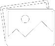

<section class = 'home-page_section'>

    <header>
        
        <div class="header-right">
        <a class="active" [routerLink]="['/feed']"> Home</a>
        <a [routerLink]="['/', currUser.username]"> {{currUser.username}}</a>
        </div>
    </header>
    
    <section class = 'page-content'>
        <aside class = 'left-sidebar'>

            <div class="user-profile" *ngIf="currUser">

                <div class="active-user">
                    
                    <p class = 'handle' >{{currUser.username}}</p>
                    <p class = 'tagname' >{{currUser.username}}</p>
                    <p class = 'bio'> {{currUser.profile.bio}}</p>
                </div>

                <div class="active-user-data">
                    <hr>
                    <div class = 'followers-data'>
                        <div>
                            <p class = 'count-follower'>{{followed.length}}</p> <p class="followers">Followers</p> 
                        </div>
                        <div class = 'vertical-line'></div>
                        <div >
                            <p class = 'count-follower'>{{followers.length}}</p> <p class="following">Following</p>
                        </div>
                    </div>
                    <hr>
                    <a href = '#'>My Profile</a>
                </div>


            </div>
        </aside>


    
        <div class="posts-content">

            <div class="tweet-posting">

                <form>
                    
                    <div *ngIf="currUser">
                        <textarea rows="5" cols="50" placeholder="What's new?!"></textarea>
                    </div>
                </form>

                <div class="buttons">
                    <button class = 'tweet-submit'>
                        Tweet
                    </button>
                    <button class = 'img-submit'>
                        
                    </button>
                </div>

            </div>


                <div *ngFor="let tweet of tweets" class='tweet-post' >
                    <app-tweet [tweet]="tweet"></app-tweet>
                </div>
        </div>
    


        <aside class = 'right-sidebar'>
            <h4>Who is to follow you</h4>

            <div class = "recommended-users" *ngFor="let f of followed">
                

                <div class="username">
                    <p class = 'handle'>{{f.profile.name}}</p>
                    <p class = 'tagname'>{{f.profile.name}}</p>
                </div>

                <button>Follow</button>

            </div>

            
            <a class = 'show-more' href="#">Show More...</a>
        </aside>

    </section>
    </section>